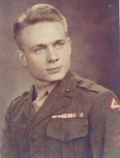

On January 17, or there about, we boarded the U.S. Newberry at Kahului, Maui T.H. As we were filing up the gangplank and being directed to our quarters, one of those little things that make life more pleasant occurred. I and approximately 14 men behind me in the line were told they had run out of space in the current quarters and that we would have to be quartered in another location. Consequently, we were placed in a completely different part of the ship. This turned out very well, as we were immediately forgotten. No one ever came to inquire about us or to see what we were doing. There were no work details, no calisthenics, and no meetings, just a chance to rest, which we took fill advantage of. We did organize to the extent that we concluded that the other troops in the area might get disgruntled if we were lying around doing nothing. We decided that we would all disappear at the same time each day for a couple of hours to give the appearance that we had other commitments.
Before we left the pier, several men became seasick just from the motion of the ship tied to the pier. I am sure they must have been miserable for the rest of the trip.
The next morning, January 18, we set sail for Pearl Harbor. We stayed in Pearl Harbor until the 27th of January when we set sail for Saipan via Eniwetok. I don't remember whether we had liberty or not. Generally speaking, I did not remember my liberties very well the next day, much less now.
I was very uncomfortable myself after we got underway. The wave action caused the ship's bow to raise 10 to 12 feet and then fall 10 to 12 feet, which of course continued day and night until we reached Saipan on February 15.
As the USS Newberry approached Eniwetok, an atoll of islands on the way to Saipan, I wondered how anyone could live on such small islands. It looked as though, from high up on the deck of the Newberry, that you could throw a rock across any one of them.
My recollection of the collision that took place there is that it was between the Newberry and a smaller ship, possibly an LCI. We had just sailed into a large open area between two islands that formed a harbor of sorts. I was sitting on the forward cargo hatch cover as close amid ship as I could get. I always tried to get as far back from the bow and as close to the center of the ship as possible, because there was less up and down motion there. As I was sitting there, the general quarters horn sounded, and someone yelled over the loudspeaker to stand by for a ram. About that time we hit a smaller ship very hard. The mast of the smaller ship hit just aft of and on the left or port side of the of the Newberry's bow. It slid along where the bow flares out, and for a few seconds it looked as though the small ship might turn over, as the top of its mast was pushed far out to one side. As the smaller ship slid along the side of the Newberry some one near the bow yelled, "Man overboard". I heard later that two men standing on the fantail of the smaller ship had been knocked overboard and could not be found. By then everyone, including myself was looking over the side to see what happened. After the war, the government exploded an atomic bomb at Eniwetok to study its effects on naval ships.
At Saipan we transferred to an LST. This was a blessing in that LSTs have more of a side-to-side rocking motion than a troop ship. Hence, for the first time since we left Pearl Harbor, my head didn't feel as though it was in a fog. It was also the first time I was able to eat a full meal without feeling like I was going to throw up.
Immediately upon transferring to the LST, we participated in a landing rehearsal off Tinian. Soon after we launched, the wind picked up and the water became very choppy. We proceeded as far as crossing the line of departure but then received orders to return to the LST because of the weather, without actually landing.
There was a LCM (Landing Craft Medium) secured to the deck of the LST which we were told would be launched over the side when we reached Iwo. I don't think anyone at the time believed that the LCM could be launched over the side without sinking. Stacked on the deck below the LCM were wooden boxes containing 105mm artillery shells. Most everyone stayed up late at night sitting under the LCM talking. It soon became apparent that it would be much cooler sleeping on deck under the LCM than sleeping in the troop quarters, which was, at the very least, hot. So we dragged our mattresses and blankets up to the main deck and laid them on the wooden boxes under the LCM. No one said anything, so we assumed that it was ok. After a few nights of talking, boredom set in, and we began to explore the ship. We soon discovered that there were boxes of canned peaches and canned cream stored in some of the passageways. After that, the ritual each evening was to liberate several cans of peaches and a can of cream from which, what else, we had peaches and cream, with sugar from the mess hall.
We got our first look at Iwo Jima on the morning of February 19. Here at last was the island we had heard so much about since leaving Saipan. Ships were everywhere: Battle Ships, Cruisers, Destroyers, LSTs by the dozen, LSIs converted to Rocket Launcher Ships, Dive Bombers, and,~ except for the LSTs, were all blasting away at Iwo Jima. You could see a vague outline of the island through a haze of smoke and flying debris. Breakfast call was announced, and everyone was served steak and eggs, referred to by many as the dead-man's breakfast. After we ate, we started getting our gear together and assembled down on the tank deck. We left the LST through the large swinging doors at the front of the ship in an Amphibious Tractor (AMTRAC) at about 07:30. We circled at the line of departure for an indeterminable long time; it seemed like hours as the AMTRACS bobbed up and down, and my stomach bobbed up and down. The steak we had for breakfast was getting harder to hold down. Finally, at about 08:30 we started toward the beach. As we neared the beach, we came under fire from a 40mm type antiaircraft gun at the edge of the first airfield. The AMTRAC next to ours was hit and began to fall back. I do not know whether they went down or not. Our AMTRAC pulled up onto the beach about 10 ft from the waters edge and dropped its rear ramp. I remember the driver saying if we were interested it was 09:20 and said "good luck" and we were on our own. We ran through the ankle deep black sand toward the first airfield, which towered above us. I saw my first dead Japanese scattered about the beach as we searched for cover. Our machine gun squad all scrambled into a very large hole that we later found out was made by a 500 lb bomb dropped by one of the B29s. Things were relatively quiet for the first hour or so. There were some mortar and artillery rounds landing at regular intervals and close enough to kick sand into our hole. The Japanese seemed to be concentrating their fire more on the landing craft that were still coming in. Many of the LCVPs were broaching as they tried to land their cargo. The wave action was, almost parallel to the beach, and if the boats stayed for more than a few minutes they were sure to be turned sideways and get stuck in the sand. The beach was piling up with everything imaginable: bodies, tanks, boats, trucks, ammo, rifles, and canteens. You name it, it was either piled up on the beach or floating away in the water.
Our squad leader, Corporal R. P. Milan (RP) and the 1st and 2nd gunners set the air-cooled machine gun up on the edge of the first airfield. Soon Japanese could be seen scurrying about on the other side of the airfield. The first gunner cranked up the gun and fired a burst across the airfield at them. The Japanese disappeared, dead or alive, I don't know. The rest of the squad had taken up positions on each side of the gun to protect its flanks, as per training. At that time I was the 7th and last man in the squad. I was not sure what I should be doing to help. Vince Varzevicius, our sergeant, came by to check out our position. When we told him about the Japanese we had seen across the airfield, he wanted to know if we had fired our carbines at them. When we said no, he gave us a lecture about engaging the enemy whenever possible. As he left he told us again, "If you see any more Japanese, shoot them, and be careful and don't shoot any Marines." Shortly after that, we received a couple of bursts of fire from across the airfield that kicked up dust and dirt all around us. Soon after that, Robert Milan (RP) came sliding along the edge of the hill behind our foxhole with his head just below the top. As he passed us he had a grin on his face and a hole in his shoulder, which fortunately had missed the bone. He said he was heading for the beach to find a ride out to a Hospital Ship. I never saw him again. His name was not on the KIA list so I assume he made it. I was now the number six man in the squad.
The day went on with periods of shelling and calm. Finally, night came, and everyone was expecting a counterattack, but none came. About nine PM my foxhole mate Donald Musser and I decided that he would take the first watch, and I fell asleep. Sometime during the night there was an unusually loud explosion that awakened me. I put it down to just another near miss and eventually went back to sleep. The next morning I found out that Lieutenant Colonel Haas and Captain Eberhardt had been killed. Their command post was in one of the large bomb craters, which was approximately 16 feet deep and at least that wide at the top. The first airfield had been built up in this area to form a large circular turnaround for the Japanese aircraft. The crater was at the bottom of this embankment and about 40 or 50 feet away. Later that morning, I was sent down to the beach for two boxes of machine gun ammunition. I had to pass the bomb crater Colonel Haas was killed in, so I looked in as I went by; there were two men at the bottom of the hole. Captain Eberhardt was halfway up the side of the hole.
One of our crew became too sick to participate in the action and was sent out to the hospital ship. I was now the fifth man in the squad. It was about this time that our platoon leader, Lieutenant John M. Dahl, was killed. We had several more platoon leaders during the operation. Vince would bring them around and introduce them and show them the platoon's positions. Then in a few days, he would be back with another one doing the same thing.
The company had lost so many men between the beach and the first airfield that the whole company was placed in battalion reserve. Then the battalion was placed in regimental reserve. Then the regiment was placed in corps reserve. We stayed in reserve for 3 or 4 days. On the second day we moved back to the beach but stayed near the airfield-runway turn-around.
After moving back to the beach on the morning of the second day, Vince, our sergeant said that he had heard they were unloading 10 in 1 rations up the beach. He told me and another man to follow him, and we headed up the beach. Vince asked around until he located a pallet with boxes of 10 in 1 rations stacked on it. The man guarding the rations wasn't sure if it we should take any of them, but Vince convinced him that it was OK, probably because he was a sergeant. We took two boxes and headed back to our area. We then set about fixing breakfast. Several men had cans of Sterno, so we heated up the canned bacon and eggs. Just as we were dividing them up and getting ready to eat, an artillery shell landed ten to fifteen feet away and covered every thing with sand. Needless to say, a lot of foul language was used to describe the *@&#* Japanese. Vincent Varzevicius went snaking down the beach again and in a few minutes came back with two cans of bacon and two can of eggs. We had better luck this time, as the shells that exploded near us were all several hundred feet away.
Well, after four days on the beach, which was no vacation, believe me, it was time to move out. We had received several replacements, bringing the squad back up to strength. We packed up and moved out toward the second airfield. As we came up to the top of the first airfield, off to our right was a Japanese antiaircraft gun similar to our duel 40mm. The crew was dead and were lying on the ground around the gun, except for one. That one was the gunner who was still sitting in his seat with his hands on the controls. He appeared to be in perfect shape except for the fact that the back of his head was missing. His face looked ghostly as his empty eye sockets stared out across the landing beaches. I looked the other way and kept moving toward the second airfield. I tried not to breathe again until I got upwind of the corpses. The stench, as they say, would gag a maggot.
Vincent Varzevicius came by my hole about sundown and said that we were going to launch an attack on Hill 382, which was just across the second airfield from where we were dug in. The attack would begin at 07:30. Well, 07:30 came and went and no Vincent or any one else. Finally Vincent came by again and said that we would be attached to the Third rifle platoon. The squad trekked down the side of the second airfield a ways and fell in with the troops of the Third Platoon. The attack started with the usual rolling artillery barrage. When the barrage lifted we spread out and formed a skirmish line and headed across the airfield at a run. When we got about halfway across the airfield, we started getting small arms fire and some mortar and artillery rounds. A couple of guys to my side and behind me were hit by rifle fire but they kept going, which was a pretty good idea, since there was no cover on the airfield runway. I remember a rifleman running behind me carr ying a Samurai sword, which was hampering his movements considerably. It's probably the reason he was shot instead of me, since I was in front of him. We reached the front of the hill and found that there was a concealed ravine back approximately 20 yards from what appeared to be the front of the hill. This ravine stretched along its front side for approximately 30 yards. The whole platoon filed in, and we set up a defense as best we could. The Lieutenant radioed back to the command post to see what to do next. The word came back to hold our position, as our flank was exposed, and we should wait until the troops on our left moved up even with our line. Well, we sat there for quite awhile with nothing happening. Then, all of a sudden here came three or four mortar rounds that exploded just over the top of the hill, to our rear. Fortunately, their trajectory was too long, and they missed the ravine. After a few more rounds, it became apparent why they were missing. It was because the wind was gusting above the top of the ravine at about 20 mph. They couldn't get it right. First, a couple of rounds would land too short and the next too long. A sergeant on the right end of the ravine said he could see the Japanese firing the mortar but couldn't get a clear rifle shot at them. The Lieutenant radioed back for artillery fire. It got the Japanese, but the wind was blowing against the incoming shells and slowed them down. A couple of rounds landed close to the right end of the ravine, seriously wounding two marines. The Lieutenant called back to the command post and cancelled the artillery fire. The rifleman with the Samurai sword that was hit in the shoulder coming across the airfield asked the lieutenant if he could try and make it back to an aid station. The lieutenant gave him and the other wounded permission to leave. His bandage was getting blood soaked, so I gave him mine and helped him put it on. Fortunately the bullet missed the bone. There was just a small black hole on the front and back of his jacket oozing blood. He asked if I would like to have the sword. I thanked him, but when we withdrew, I left it setting there against a boulder. I was sure that few of us would get out of that death trap alive. Later, a runner came up waving a message in his hand but was shot twice in the chest and fell about 10 yards from the end of the ravine. One of the riflemen closest to the runner crawled out to try and grab his hand, but when the runner reached his hand out he was shot again. After that, no one ventured out, as they knew it was certain death. We sat some more; then a Japanese light machine gun barrel slowly slid up in the air from a concealed trench located about halfway up the front of the hill in front of us. I could practically hear 20 pairs of eyeballs click on that gun barrel when it appeared. Everyone had their eyes glued to the top of that hill anyway, expecting a bucket full of hand grenades to come flying over the top any second. I don't know how that Japanese thought he could get away with that move unless he didn't realize the gun barrel was exposed. After a couple of minutes his head came up with the rest of the machine gun. There were three of us just below him, and we all fired simultaneously. His helmet flew off along with most of his head. We sat some more, still gazing at the top and front of the hill, a little too closely, I guess, because we were almost caught napping. There was a ridge 5 or 6 foot high and about 30 yards out which ran perpendicular to the left end of our ravine. Fortunately, a rifleman noticed a gun barrel bobbing along just over the top of the ridge and called everyone's attention to it. When the Japanese's head appeared over the top of the ridge, several men closer to the end of the ravine killed him. Finally, the sun started going down, and the word came over the radio to withdraw if we could. The Lieutenant divided us into two groups; the first group consisted of the riflemen and men with rifles. The second group would be the machine guns and their crews. The plan was for the men with rifles to fire on the top of the hill while the two machine gun crews pulled back about 50 yards and set up to fire on the top of the hill and anything else that moved. Then the riflemen could withdraw, bringing the wounded with them and set up 50 yards behind the machine guns and so on until we reached the edge of the airfield. When we were about halfway across the airfield, we started getting rifle fire and mortar rounds from a ridge to our right. The Lieutenant called back for smoke. The artillery laid down a half dozen rounds of smoke in the area off of our right flank. That worked. We were able to finish the withdrawal without further casualties. It seemed like there were as many wounded hanging onto someone as there were men to hang onto. I breathed a sigh of relief as I settled into my foxhole for the night, exhausted but glad to be alive.
We were given the task of protecting the far end of the right hand runway of the second airfield. This section of the airfield was about 200 yards across from, and almost directly in front of, Hill 382. Vincent Varzevicius picked a location for our machine gun, and we set it up. I settled in on the right flank. The day before we had received a new replacement. He was sharing a shell hole with me. The next shell hole over had two dead Japanese in it, providing a constant reminder of where you could be in about 30 seconds. We were getting heavy mortar fire coming in from somewhere to our right as we faced across the second airfield. All day long Bam, Bam, Bam, a pause, then Bam, Bam; they kept coming two and three rounds at a time. Every other round the new replacement would say, "They are shooting at this hole. I know that they are shooting at this hole. I'm going to move to another hole." The continuous explosions were rubbing my nerves raw, which was bad enough, without him reminding me of it every other round. So I finally said, "I wish you would get the hell out of here and go somewhere." He moved to a hole about 10 yards away. He sat there for about 15 minutes. The mortar rounds kept coming Bam, Bam, Bam; Bam, Bam; Bam, Bam, Bam, Bam, Bam, Bam,Bam,Bam. He finally jumped up and ran back to the hole I was in and sat down. Not two seconds later a mortar round landed in the hole he had just left. He shut up and stopped complaining. The mortar rounds kept coming and did off and on for the next day and a half On the second day, five trucks came snaking in behind a tank with a bulldozer blade on the front. The tank was clearing out the roadway as it came along. The trucks turned out to be rocket launcher trucks. Each truck held approximately 40 rockets. It took them 15 to 20 minutes to get everything set up, and then all five trucks started to launch their rockets. They came out of the racks so fast that there must have been 100 rockets in the air before the first one hit the ground. I was very thankful that I wasn't on the receiving end of that barrage. The Japanese mortar barrage stopped and didn't resume, but as soon as the rockets were launched, the trucks turned around with their tires spinning and kicking up dust and headed out and not a second to soon. No sooner had they cleared the area than artillery rounds started falling right where they had been parked.
The squad was strung out along the edge of the second airfield in semi-reserve mode. It had been a relatively uneventful day except for an occasional mortar round, which would immediately draw fire from our artillery. Suddenly, a Sherman Tank came rolling in at about 30 to 35 mph and stopped about 30 feet off to the left side of my foxhole. Before I knew what was happening, he fired his 75mm gun at something. I soon found out that it was a Japanese 47mm antitank gun that immediately fired back, striking the tanks turret a glancing blow. The round went whizzing over my head and exploded some 30 feet away at the bottom of the embankment, which ran along the edge of that part of the second airfield. The tank would ease up very slowly, fire a round, and then back up real fast. He would then sit there for four or five minutes, probably getting up his nerve, not that I blame him. The thought of an AT round punching a hole in the turret is not a pleasant thought. Each time he would back up, he would come 4 or 5 feet closer to my foxhole. I would have moved, but there was nowhere to move to, except down the embankment, where I would be totally exposed. He was getting so close that the next time he backed up, I got on the telephone on the back of the tank and told him if he kept going like he was, he was going to run over my fox hole. He wasn't impressed and suggested that I move. When I told him my foxhole was five feet from the edge of a 15-foot embankment he was more interested. After that, he was careful not to move closer to my foxhole. The Japanese couldn't seem to get a solid hit on the Sherman's turret. They exchanged several more rounds with the Japanese shells ricocheting off the turret and flying all over the place. The Sherman finally backed off. He must have hit the Japanese gun or gunners, because they didn't fire back as he backed out of there.
Later on in the afternoon of the second day, two marines came into the area below me, looked around at something and then started digging a hole. It was at the bottom of the 15-foot embankment and out approximately 50 yards from its base. At first, I thought they were digging a foxhole, but they kept digging and making the hole larger and larger. Finally they tied ropes to whatever it was they were digging up and started to pull. It turned out to be one of the large antitank mines with horns. Well they either didn't tie the rope to the right place or it was booby-trapped, because as they stood there looking at it, it exploded and the two marines disappeared and a very large piece of metal came swish, swish, swishing over my head.
As night approached, uncharacteristically, the Japanese started to increase their artillery and mortar fire. Usually, you could expect an occasional round during the night, but no sustained firing. This night by dark they were really laying down the rounds. Vince came by around 22:00 and said that the Japanese were going to counterattack and to pack up the gun. We were moving out. I had no idea where we were going. It was dark, and the only light was from exploding shells. We took off across the second airfield, right behind the rifle squad. We crossed the airfield and ran on for what must have been at least a mile. Finally, we stopped behind a cliff about 30 feet high and 100 or so feet wide and waited. We could hear the Japanese tanks clanking off in the distance. All of our artillery must have been firing as fast as they could load, because there was never a single shell exploding, but five, ten and more shells exploding nearly simultaneously. It was continuous and unrelenting and went on for a good hour. Most of the rounds were airburst. As you may or may not know, airbursts explode about 6 feet above the ground and spray a few hundred steel fragments all over the landscape. The cliff protected us from Japanese fire from the front, but behind us towards the airfield there were plenty of Japanese shells exploding. The shrapnel from these shells was pecking away at the cliff just over our heads. Some grumbling broke out about the unnecessary exposure of standing while Japanese shells were exploding that close to us. The lieutenant finally said that we could kneel down but not to get too comfortable, because we were going to move out. Meanwhile, a 37mm antitank gun crew man-handled their antitank gun into position about 50 yards off to our right and started firing across the open area just to the side of the cliff.
We finally got the word to dig in and set up the gun. The rifle squad spread out and found whatever cover they could. We were told it didn't matter whether we could see anything or not. We were to just sweep the area a couple of feet above the ground. They knew that the Japanese were out there, and all we needed to do was to keep them pinned down so the artillery could kill them. It wasn't long before the light machine gun that we used for assaults began to overheat. You can tell, because the barrel will start to glow red. We were wishing that we had the water-cooled gun, which can fire almost indefinitely without overheating. All we could do was to slow down our rate of fire. As some of the shells exploded dangerously close, we became concerned that a short round from our own artillery would wipe us out. After an hour or so, the shelling subsided, and the word came down to cease-fire. We stayed there the rest of the night. I drew first watch; I was dead tired and didn't know how I was going to keep my eyes open for two more hours. Then, I thought of having a Japanese bayonet up side the head, and I propped my eyes open and concentrated on the light cast by the star shells. I can still hear the sound of the destroyer firing the high altitude star shells into the night sky. Ka-BOOM HSSSSSSSSS POW, and a little parachute would open with the flare dangling under it. The eerie light from the flares lit the battlefield in front of us; nothing was moving. The next morning the area out in front of us where the shelling was concentrated was littered with dead Japanese. We later heard that over 600 Japanese had been killed during the night.
This day we jumped off around 05:30 before the chickens even got up, no rolling artillery barrage, no rockets, just jump and run. The objective was a large communications blockhouse near Turkey Knob. The Knob, as seen from our viewpoint, was just a small odd-shaped hill of earth and rocks, no more than 30 feet high. Repeated bombings and shelling had blown away most of the dirt and rocks from the top of the blockhouse but had hardly put a dent in the structure itself Except for the top and one side, it was still mostly underground. We approached it from the side, up a narrow ravine. As we neared the top of the ravine, the firing was getting heavier. A Japanese machine gun was firing in our general direction. Some rounds were coming perilously close, as they ricocheted off the rocks and ground. Everyone hit the deck, and we crawled forward toward a mound of dirt piled up along the edge of the ravine that approached the front of the blockhouse. On our right was the front of the blockhouse with large steel doors facing the ravine. We tried to set up our machine gun, but the Japanese gunner must have seen the movement, because he really laid into the mound of dirt in front of us. We were looking for another place to set the gun up when a sergeant crawled over and said that the lieutenant had just called for a very close artillery barrage, and we should take cover. He was right about its being close; as the shells came over, we could see them. They could not have been more than 15 to 20 feet above us, and they were hitting between 100 and 150 feet from where we were lying behind the mound of dirt. The barrage lasted for about 10 minutes, and when it lifted, a flamethrower tank came roaring up and gave the area in front of us a good hosing down. We received no further fire from the Japanese machine gun. We finally got our gun set up to cover the area on the opposite side of the ravine. While we were setting up the gun, a couple of demolition guys crawled onto the top of the blockhouse, set up a shape-charge about 10 feet from the right front corner nearest us, yelled fire in the hole, and set it off. It's a good thing that we all covered our ears, because it was a mighty blast, and we were very close. It blew a hole through to the inside. The flamethrower tank then moved up and started pouring fuel from his flamethrower tube into the hole. After about 10 minutes, the tank backed off and gave it a shot of fire. The fuel caught fire and, in a minute or so, you could hear a loud muffled explosion inside the blockhouse. The doors bulged out, and smoke poured out, but no Japanese. The blockhouse at Turkey Knob was out of commission. As night approached, we were relieved by Company B, 23rd Marines and withdrew to the second airfield. When we reached the second airfield, there were 5 disabled tanks scattered along the runway. Three of the tanks were burning, fueled by their onboard ammunition, which crackled popped and exploded.
We were told that this would be the final push to the ocean on the southeastern end of the island. We were to pass through the Second Battalion, 23rd Marines which was presently occupying positions along the Beach Road in the area near Tachiiwa Point. We jumped off about 07:30 and started the march down the Beach Road. After about a half an hour, we were given a chance to rest. I grabbed an empty ammo box lying along the side of the road and sat on it. Immediately I began to smell the rottenness smell I had encountered to date, which had to be pretty bad, as the smell of rotting flesh was everywhere. I began to look around to see where it was coming from and discovered that I was sitting on a Japanese that had been run over by a tank. In a word, he was flat. So I picked up my weapon and my gear, moved upwind about 10 feet, faced the other way, and sat down. Such is war. In a few minutes the word came down to move out. We soon met the troops of the Second Battalion, 23rd Marines which was withdrawing from the area near Tachiiwa Point. As we passed through them, they said they had had a really bad fight and made it clear that they were not retreating, just advancing to the rear. We were expecting a real fight, but none materialized. After some waiting, while the officers conferred on the radio and with each other, we were given the order to move out and went single file, more or less, onto a small plateau about 300 feet long and 200 feet wide. There was ample evidence that a battle had taken place recently, as there were Japanese bodies lying all over the area. The bodies where I was located appeared to have been dead for no more than a day. Since there was no opposition, we set up a perimeter of defense. Later, orders came down to dig in for the night. There were the usual two options: use an existing foxhole or dig a new one. I took the easy way out and used the one I was sitting next to, even though a dead Japanese was in a foxhole no more than 15 feet away. I figured that if he didn't bother me I wouldn't bother him. I had found that if you didn't rest when you could, you might not get a chance for a very long time. Since things seemed secure, I took a much-needed nap, knowing that I would have to be up half the night taking two-hour shifts on lookout.
Well, every marine needs a few souvenirs to show his children, that is, if he doesn't get killed getting them. Off the end of the plateau towards the ocean and down an incline about 150 ft from where we were camped was a Japanese naval gun mounted on a concrete slab surrounded by sandbags. Approximately 20 feet behind the gun was the mouth of a large cave. Looking down the tunnel, I could see to the bottom, though not very well. I tried matches to light the way, but there was a draft in the tunnel, and the matches wouldn't stay lit. Looking around, I found that some of the Japanese shells were broken open, and the powder had spilled out. The powder was in long spaghetti-like pieces about 10 inches long. I lit one, and it burned very slowly. I took several and held them together and made a torch. The sticks when held together, burned faster, but they made a lot more light. I headed into the cave with my carbine at the ready in one hand and the torch in the other. At the bottom of the cave there were two beds, each made up of several boards nailed together and covered with a thin mattress and a blanket. There were a number of boxes filled with mementos such as pictures, money, medals, letters, etc. and since they seemed to be abandoned, I declared them souvenirs. I tried not to move anything that might be booby-trapped. While this was wise, it cost me a regimental flag found by some one else the next day. I had previously liberated a soldier's personal flag, which I still have. I have wished many times that I had kept the samurai sword I left on Hill 382, but at the time it seemed wise to leave it.
We had been on the plateau at the southeastern end of the island for about five days. We had had no daytime action, but several times at night we had Japanese trying to infiltrate our positions. So we set up phosphorus grenades with trip wires. The phosphorus grenades gave off a considerable amount of light and wouldn't blow someone's head off like a fragmentation grenade might do.
A cliff boarded one side of the plateau, while the opposite side overlooked a large ravine. The plateau sloped up toward the side overlooking the ravine. On the edge of the ravine about 100 feet from my foxhole was what looked like a Japanese machine gun emplacement made up of three or four large logs. It looked as though it had been blown up by some kind of an explosion, because one of the logs was setting up at an odd angle. One of the other squads had set up their machine gun in the emplacement and were just lying around and talking. One of the riflemen, Corporal Kincaid, was sitting behind the machine gun when a Japanese sniper killed him. It was very sad that after all of the operations he had gone through that he should be killed on the last day of the Iwo Jima operation and, in effect, the end of the war for the Fourth Marine Division.
The day before we left, I had gotten permission to visit the Fourth Division Cemetery to see if I could find Ralph Mooney and Wallace Cady graves. After searching for a while, I became depressed seeing all of the bodies waiting to be buried. There were hundreds. I came back to the area wondering if I might be there in a few days.
The word finally came down on March 16 that we were leaving the island. I couldn't believe that there was a chance that we might make it off of that hellhole without getting killed. I was extra careful walking back toward the beach. When we reached the beach, we met a group of Army solders that were sitting around near the road talking. They said they were part of an Anti Aircraft Gun crew and were waiting for their gun to be unloaded. We talked with them while we were waiting for orders to board ship. Finally, the word came to board ship. An LST was nosed up on the beach with its doors open and its ramp down. While we filed up the ramp I could hear a machine gun rattling away in the distance. We had heard that morning that the Third Division was still trying to take a small area called Cushman's Pocket. I was very glad I wasn't there. I didn't look back. I just keep walking. Everyone filed through the tank deck up to the main deck as they came aboard. Finally, the ramp was raised, and big doors closed. Word was passed over the loudspeaker for everyone to move toward the fantail to help raise the bow up off the sand. We floated free. The engines came on, and we backed out. We had made it. I had actually gotten off that God Damn place alive. I could hardly believe it. I thanked God that night that I was still alive. The whole experience had been nerve-racking, to say the very least, and one that I shall never, ever forget.
Written by Richard Lowe
Maintained on web site by Rowland Lewis
Last Modified 02/28/2001